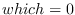

Next: Printer Up: Streams and Input/Output Previous: Streams Contents Index
Reader's global variables:
Reader's default macro characters:
( read list
" read string
' read quoted expression
# dispatch macro
; comment until end of line
` back-quote
, list-time eval
@ append
% read C-like mathematical forms
Escape characters:
single character escapemultiple character escape
When an unescaped symbol is read, all the constituent characters are converted to upcase by default, and upcase-character symbol is stored internally. For example, 'abc and 'ABC are regarded as the same symbol. Escape is necessary to distinguish between them. 'ABC, 'ABC and 'abc are identical, while 'abc and 'abc are different symbols. By default, even if you enter a symbol with upcase letters, When symbols are printed, EusLisp's printer converts them into lowercase from internal upcase representation. This conversion is suppressed by setting *print-case* to :UPCASE.
Note that 10. is read as integer 10, not floating 10.0. Since ':' is reserved for package marker, it must be escaped when used as a constituent of a symbol, like '. This restriction is imposed not by the syntax of the character ':', but by the attribute which determines the alphabetical order and the meaning of the letter. The attributes of characters are hardwired in the reader. Thus, although you may change the syntax of a certain character by creating a new readtable by copy-readtable and resetting the syntactic meaning for the character by set-syntax-from-char, you cannot change its attribute anyway. In other words, digits are always digits, alphabets are alphabets, and we cannot use letters like '#$%@' to represent numbers.
String is denoted by two double quotes '"' at the beginning and at the end.
No case conversion is taken inside the quotes.
A back-slash 'ís used as an escape to include a double quote.
Therefore, "He said, Ï like Lisp.SPMquot;" is read as a string
including two double quotes.
To enter a back-slash, two back-slashes are needed.
Note that shift-JIS encoding of Japanese text is inadequate for this
read-string convention, since some characters happen to have the
code of a back-slash (#x5c) as their second byte.
Use of EUC coding is preferrable.
% is an extended read-macro character specific to EusLisp.
Preceding % to a mathematical formula written in infix notation,
the formula is converted to lisp's prefix form. For an instance,
%(1 + 2 * 3 / 4.0) is transformed to
(+ 1 (/ (* 2 3) 4.0)) and 2.5 is resulted.
C-like function calls and array references are converted to lisp forms, too,
thus, %(sin(x) + a[1])
is evaluated to (+ (sin x) (aref a 1)).
Functions having more than one arguments and arrays of more than two
dimeisions are notated as func(a b c ...) and ary[1 2 3 ...],
not func(a,b,c) nor ary[1][2][3].
Relative expressions and assignments are also properly handled, so,
%(a  b) is converted to (
b) is converted to ( a b),
and %(a[0] = b[0] * c[0]) is to
(setf (aref b 0) (* (aref b 0) (aref c 0))).
A simple optimization is performed to reduce duplicated function calls and
array references.
%(sin(x) + cos(x) / sin(x)) is converted into
(let* ((temp (sin x))) (+ temp (/ (cos x) temp))).
a b),
and %(a[0] = b[0] * c[0]) is to
(setf (aref b 0) (* (aref b 0) (aref c 0))).
A simple optimization is performed to reduce duplicated function calls and
array references.
%(sin(x) + cos(x) / sin(x)) is converted into
(let* ((temp (sin x))) (+ temp (/ (cos x) temp))).
Dispatch macros are preceeded by the # character.
A number (integer) argument can be given between # and a dispatch macro
character.
This means that any digits (0 .. 9) cannot be defined as dispatch
macro characters.
Reader's standard dispatch macro characters follow:
Some reader functions have eof-error-p, eof-value and recursive-p parameters. The first two parameters control the behavior when the reader encounters with end-of-file. The default of eof-error-p is t, which causes an error at eof. If you want to know the occurrence of eof and don't want the system's error-handler to snatch control, specify nil to eof-error-p. Thus, when an eof appears during reading, the reader returns the eof-value instead of entering an error loop. Eof-value is defaulted to nil. So, you cannot know if nil is actually read, or eof appears. To distinguish them, give a value which can never appear in the stream. Use cons or gensym to make such unique data object.
Recursive-p is often used in read-macro functions, which call reader recursively. Non-nil value of recursive-p tells the reader that the read operation has been started somewhere else and it should not reset the internal table for reading forms labeled by #n= and #n#.
read &optional stream (eof-error-p t) (eof-value nil) recursive-p [function]
read-delimited-list delim-char &optional stream recursive-p [function]
read-line &optional stream (eof-error-p t) (eof-value nil) [function]
read-char &optional stream (eof-error-p t) (eof-value nil) [function]
read-from-string string &optional (eof-error-p t) (eof-value nil) [function]
unread-char char &optional stream [function]
peek-char &optional stream (eof-error-p t) (eof-value nil) [function]
y-or-n-p &optional format-string &rest args [function]
yes-or-no-p &optional stream [function]
In the readtable manipulating functions, the default value of readtable is the value of the global variable *readtable*.
set-syntax-from-char to-char to-char [to-readtable from-readtable] [function]
set-macro-character char func [non-teminating-p readtable] [function]
2016-03-23